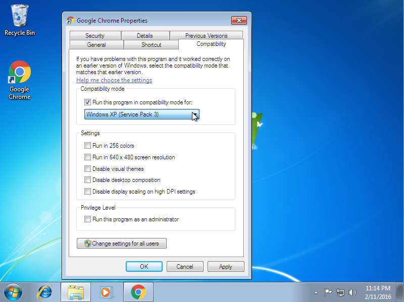
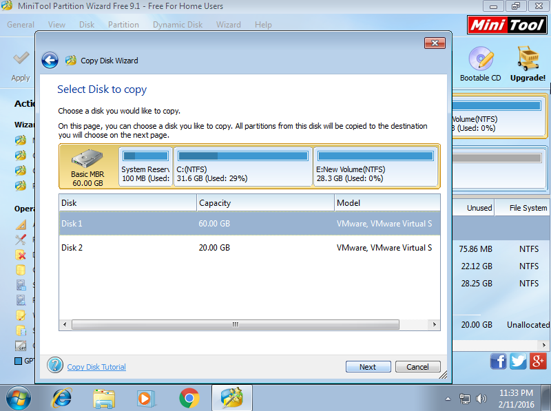
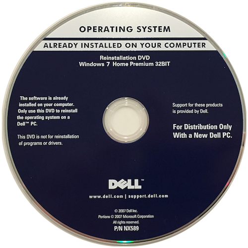

(軟體篇)Windows 10操作系統 <<
Previous Next >> (軟體篇)準備安裝硬碟
(軟體篇)安裝Windows
在本模塊中，我們將討論如何安裝Windows操作系統。在學習該模塊時，我們將重點關注Windows 7，但是請注意，這些概念中的大多數都適用於Windows的所有較新版本，但取決於版本的差異很小。
In this module, we'll talk about how to install the Windows Operating System. We'll focus on Windows 7 as we go through the module, but note that most of these concepts are applicable to all newer versions of Windows, with only minor differences depending on the version.
兼容性
即使大多數程序是為Windows的舊版本創建的，例如95、98，ME，NT 4.0，XP或Vista，大多數程序也可以在Windows 7上正常運行。如果不這樣做，Windows 7將具有稱為兼容模式的功能，就像Windows XP和Vista一樣。要訪問此模式，只需右鍵單擊應用程序的圖標，然後選擇屬性。接下來，選擇“兼容性”選項卡。如果選中標記為“在兼容模式下運行程序”的複選框，則可以選擇希望Windows 7為您模擬的操作系統。當試圖充分運行非Windows 7設計的較舊程序時，這可能會很有幫助。如果您的公司擁有針對較舊系統的自定義程序，並且不希望將時間/金錢用於創建新程序，這將非常有用。
Compatibility
Most programs can run properly on Windows 7, even if they were created for older versions of Windows such as 95, 98, ME, NT 4.0, XP, or Vista. If they do not, Windows 7 comes with a capability called Compatibility Mode, like Windows XP and Vista did. To access this mode, simply right click the application’s icon and select Properties. Next, select the Compatibility tab. If you select the checkbox labeled “Run the program in compatibility mode for,” you can then select the operating system you wish Windows 7 to emulate for you. This can be helpful when trying to adequately run older programs that were not designed for Windows 7. This is useful if your company has custom-made programs for older systems, and doesn’t wish to reinvest the time/money to create new programs.

此外，Windows 7還提供了程序兼容性嚮導，以引導您完成使較舊的程序與Windows 7一起使用的步驟。要進入該嚮導，請依次單擊“控制面板”，“程序”，然後單擊“運行為Windows早期版本製作的程序”。 。” 該嚮導將允許您以各種方式配置程序，例如，將使用哪種操作系統來仿真該程序以及應使用哪些顯示功能（640 x 480分辨率，256色等）。
Additionally, Windows 7 offers a Program Compatibility Wizard to walk you through the steps of getting an older program to work with Windows 7. To enter the wizard, you click on Control Panel, then Programs, then “Run programs made for previous versions of Windows.” The wizard will allow you to configure the program in various ways, such as which operating system it will be emulated with and what display features it should use (640 x 480 resolution, 256 colors, etc.).
.png)
安裝Windows的方法
您可以使用多種方法來安裝Windows 7，包括光盤，網絡，驅動器映像，恢復CD /分區或從USB拇指驅動器引導。安裝操作系統的第一步是確定如何引導安裝程序以及執行哪種安裝類型。
Methods for Installing Windo
ws
You can install Windows 7 using a variety of methods, including an optical disk, network, drive image, recovery CD/partition, or booting from a USB thumb drive. The first step of installing the operating system is to decide how you will boot the installation program and which type of installation you will perform.
從可啟動Windows DVD安裝
最簡單的方法是從DVD-ROM等安裝介質安裝操作系統。如果要在單個PC上安裝單個操作系統，則從安裝DVD引導是迄今為止最簡單的方法。
Installing from a Bootable Windows DVD
The easiest and simplest method is to install the operating system from an installation media, such as a DVD-ROM. If you are installing a single operating system on a single PC, booting from the installation DVD is by far the simplest method.
要從可啟動的Windows DVD安裝，只需將計算機的BIOS設置為使計算機從光盤驅動器在硬盤之前啟動，然後重新啟動計算機。在引導過程中按任意鍵時，計算機將從DVD中讀取安裝文件並開始安裝過程。安裝程序將確定可用的硬盤，並為您提供在設備上創建分區和文件系統的選項，是否接受最終用戶許可協議（EULA），然後通過將必要的文件複製到以下位置來執行安裝：硬盤。
To install from a bootable Windows DVD, simply set the computer’s BIOS to have the computer boot from the optical drive before the hard disk, then reboot the computer. The computer will read the installation files from the DVD and begin the installation process when you press any key during the boot process. The installation program will determine what hard disks are available, and will give you the option to create partitions and file systems on the devices, have you accept the end user license agreement (EULA), and then perform the installation by copying the necessary files to the hard disk.
從網絡驅動器安裝
安裝操作系統的另一種方法是通過網絡安裝它。這要求將目標工作站連接到網絡，將其配置為從其網卡引導，並且將安裝服務器配置為將操作系統推送到這些工作站。當您要同時安裝一個或多個系統時，這是一個很好的方法，但是您需要確保網絡具有足夠的帶寬來支持這種類型的安裝。
Installing from a Network Drive
Another method of installing the operating system is to install it over a network. This requires that the target workstation be connected to the network, that it is configured to boot from its network card, and that an installation server is configured to push the operating system to these workstations. This is a good method when you want to install one or more systems simultaneously, but you need to ensure your network has enough bandwidth to support this type of installation.
從網絡驅動器安裝時，網絡必須在網絡服務器上運行安裝或部署服務以支持安裝。對於Windows 2003或Windows 2008服務器，可以使用Windows部署服務將安裝文件推送到目標工作站。如果運行的是Windows 2000或2003服務器，則可以使用“遠程安裝服務”執行此功能。如果站點許可證使用單個產品密鑰，則從網絡驅動器運行安裝非常有用。否則，技術人員將不得不將產品密鑰分別推到每個工作站。
When installing from a network drive, the network must have an installation or deployment service running on a network server to support the installation. For Windows 2003 or Windows 2008 servers, you can use the Windows Deployment Service to push the installation files to the target workstations. If you are running Windows 2000 or 2003 servers, you can use the Remote Installation Service to perform this function. Running your installations from a network drive is useful if your site licenses use a singular product key. If not, a technician will have to push the product key to each workstation individually.
使用網絡安裝時，可以通過提供包含安裝程序所需信息的答案文件來執行無人值守安裝，該信息通常是技術人員在設置過程中手動輸入的信息。可以將這些信息（例如工作站名稱，網絡名稱，用戶帳戶，時區等）存儲在名為unattend.xml的文件中，以進行Windows 7安裝。安裝程序將從該文件中讀取答案，並在技術人員沒有任何進一步幫助的情況下執行工作站的設置，從而使技術人員在安裝過程中可以執行其他任務。
Unattended installations can be performed when using a network installation by providing an answer file that contains the information required by the installation program, which is information normally manually entered by the technician during the setup process. This information, such as workstation name, network name, user accounts, time zone, and more can be stored in a file called unattend.xml for a Windows 7 installation. The installation program will read the answers from this file and perform the setup of the workstation without any further assistance from the technician, allowing the technician to be performing other tasks while the installation occurs.
從磁盤映像安裝
另一種方法是使用硬盤驅動器映像。此方法要求您有一台預編譯的計算機，其中已安裝了所有驅動程序，其他軟件和設置（通常首先使用CD上的安裝）。準備好“主”計算機後，就可以將硬盤驅動器從主計算機複製到目標硬盤上。這允許使用所有相同的用戶，密碼，配置設置和軟件來創建相同的克隆計算機。在大型辦公環境中，這對於確保所有計算機上的配置都相同非常有用。
Installing from Disk Image
Another method is to use hard drive imaging. This method requires that you have a pre-built machine with all the drivers, additional software, and settings already created (usually using the installation from CD first). Once you have a “master” computer ready, you can do a bit for bit copy of the hard disk drive from the master computer onto the target hard drive. This allows for an identical clone machine to be created with all the same users, passwords, configuration settings, and software. This is very useful in a large office environment to ensure the configurations are the same on all machines.
磁盤克隆是將相同的驅動器分區內容複製到格式化的驅動器，並允許同時安裝多個驅動器。但是，要使此功能正常運行，硬件必須相同，包括相同的主板，相同的硬盤驅動器適配器（IDE / ATA / SCSI）和相同的BIOS設置參數。如果其中任何一個不同，或者工作站中安裝了不同的設備，則必須在驅動器映像後安裝新的驅動程序，在某些情況下，驅動器映像將失敗並且計算機將拒絕引導。為了使驅動器映像合法（就版權法和EULA協議而言），公司必須擁有足夠數量的站點許可證才能獲取所映像PC的數量，並必須備有一份單獨的許可證副本。
Disk cloning is the copying of identical drive partition contents to formatted drives and allows for multiple drives to be installed simultaneously. For this to work without issues, though, the hardware must be identical, including the same motherboard, same hard drive adapter (IDE/ATA/SCSI), and same BIOS setup parameters. If any of these are different, or different devices are installed in the workstations, new drivers will have to be installed after drive imaging, and in some cases the drive imaging will fail and the computer will refuse to boot. In order for drive imaging to be legal (in terms of copyright laws and EULA agreements), the company must have an adequate number of site licenses for the number of PCs being imaged and a copy of the individual licenses on file.
當執行驅動器映像時，所有工作站都是相同的克隆，因此它們在所有計算機上都具有相同的安全ID。這可能會給您的域控制器帶來問題，因此您必須使用SysPrep實用程序來考慮差異，並在部署後讓它更改每個工作站的安全ID。就像無人值守安裝一樣，SysPrep使用unattend.xml文件來設置每個工作站。
When you perform drive imaging, all the workstations are identical clones, so they have the same security ID on all machines. This can cause problems for your domain controllers, so you must use the SysPrep utility to engage allowances for the differences and have it change each workstation’s security ID after deployment. SysPrep uses the unattend.xml file, just like an unattended installation, to set up each workstation.

從Recovery DVD安裝
許多製造商提供的另一個選項稱為恢復DVD或恢復磁盤分區。 這是製造商提供的磁盤映像，用於創建目標工作站的克隆。 這類似於驅動器映像，除了源是出廠的DVD-ROM或磁盤分區而不是其他硬盤。 克隆/恢復的最終產品是一個還原到出廠狀態的系統，就像最初從工廠出廠時一樣。
Installing from Recovery DVD
Another option provided by many manufacturers is called a recovery DVD or recovery disk partition. This is a manufacturer-supplied disk image that creates a clone of the target workstation. This is similar to drive imaging, except the source is a factory DVD-ROM or disk partition instead of another hard disk. The end product of this cloning/recovery is a system that is restored back to the factory state, just like it was when originally shipped from the factory.

大多數主要供應商（例如Dell和HP）都使用此方法來創建特定於系統的引導分區或光盤，以替換所有系統文件/驅動程序。它具有許多優點，例如在發生災難性故障時可以輕鬆恢復系統，以及擺脫操作系統，病毒，惡意軟件和其他難以消除的疾病。一些缺點包括恢復完全格式化驅動器上的所有數據並將其替換為恢復磁盤或分區上的數據，然後用戶必須使用Microsoft重新激活許可證。這將導致工作站重新格式化為初始出廠狀態，就好像它是從商店購買的一樣。如果您要準備轉售計算機，從而完全擦除工作站上原始客戶的數據和程序，則此功能非常有用。
This method is used by most major vendors, such as Dell and HP, to create a system-specific boot partition or optical disc for replacement of all system files/drivers. It has many advantages, such as easy recovery of the system in case of catastrophic failure, as well as getting rid of the operating system, viruses, malware, and other maladies that would be hard to eliminate otherwise. Some disadvantages include that the recovery completely formats and replaces all the data on the drive with the data on the recovery disk or partition, and the user must then reactivate the license with Microsoft. This causes the workstation to be reformatted back to the initial factory state, as if it was just purchased from the store. This can be very useful if you want to prepare the computer for resale, entirely erasing the original customer’s data and programs from the workstation.
通過USB安裝
最終的安裝方法是從USB驅動器作為安裝介質啟動。這與使用分發DVD-ROM相似，但是使用USB拇指驅動器或硬盤驅動器代替光學介質。 Windows 7默認情況下不支持此功能，但是有些第三方產品可讓您以這種方式安裝Windows 7。在處理沒有光驅的上網本時，這很有用。
Installing by USB
The final method of installation is to boot from a USB drive as the installation media. This works similarly to the use of a distribution DVD-ROM, but uses a USB thumb drive or hard drive instead of the optical media. This isn’t supported by default by Windows 7, but there are third-party products that will allow you to install Windows 7 in this manner. This is helpful when dealing with a netbook that has no optical drive.
(軟體篇)Windows 10操作系統 <<
Previous Next >> (軟體篇)準備安裝硬碟